New forms of human-to-human interaction
through art and technology
ODA.dream is an Art & Science creative-tech studio developing performance and interactive formats where physiological signals, audience participation and real-time systems become part of the artistic language.
We do not use neurotechnology to control machines.
We use technology to create new relationships between people.

Interferences of Realities
A live performance in which the collective brain activity of twelve volunteer participants becomes part of the scenic system. Twelve performers and twelve audience members wear neurointerfaces; their physiological data are processed in real time and shape the visual and scenic structure of the work. The audience does not watch an installation — it becomes the composition.
Living archive
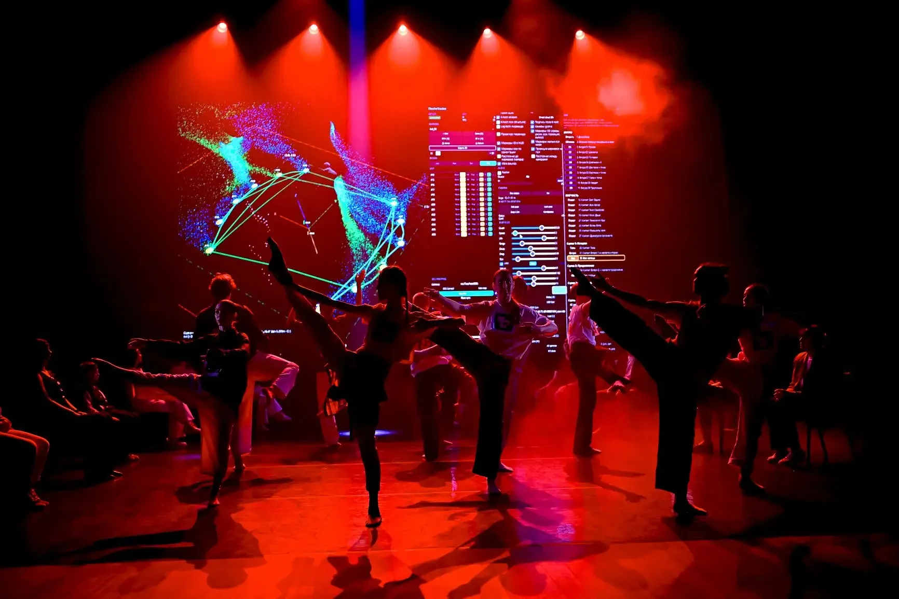

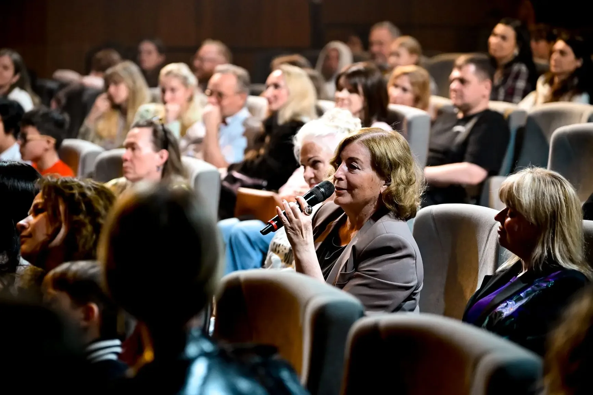
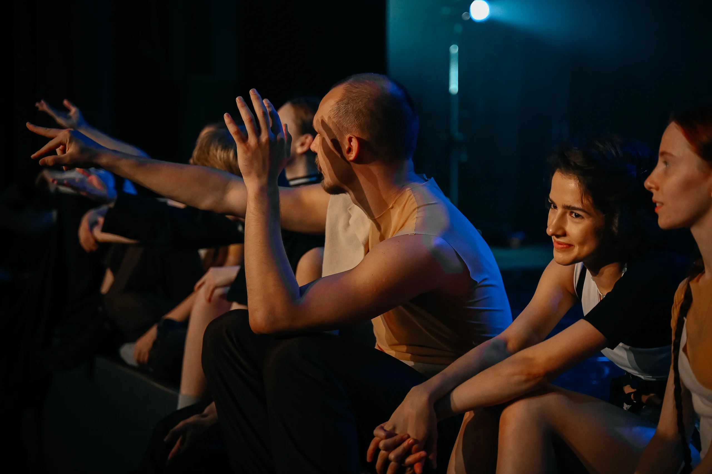
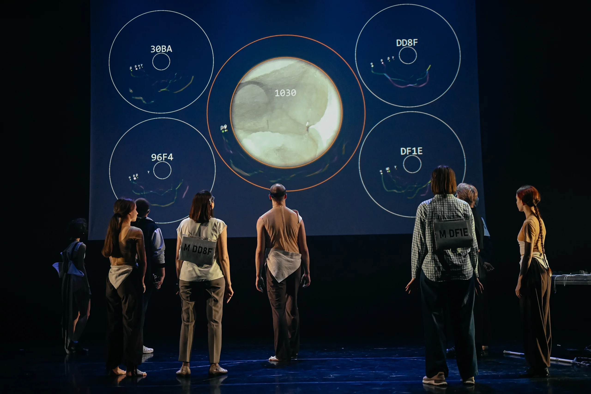
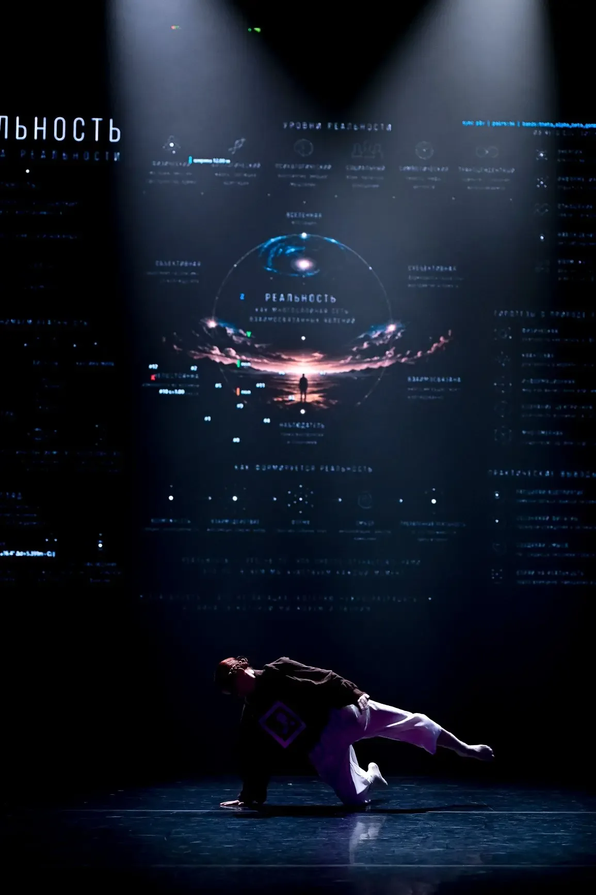
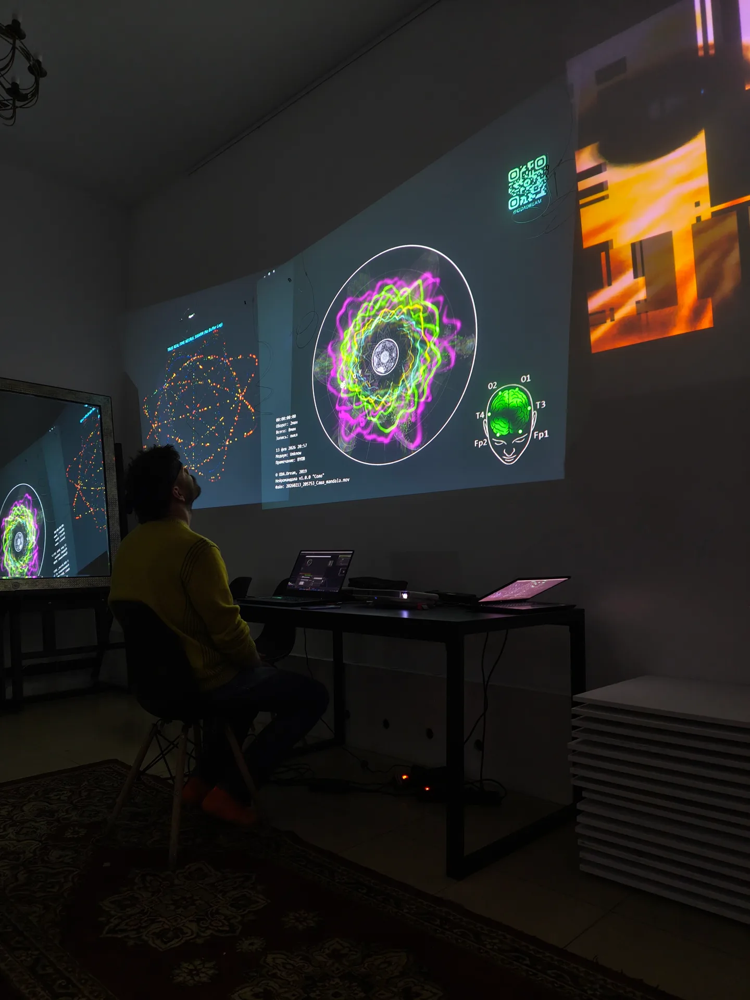
From artwork to international co-production format
ODA.dream brings
Local partner provides
Result
Art + Technology
Own artistic practice combined with engineering and software competence in one team.
Proven in live environments
Real performances, festivals, corporate events and live audience.
Human-to-human focus
Relationships, collectivity, attention and synchronization are the core of the research.
From prototype to format
Not only artworks, but reproducible artistic-technological formats.
Proven in commercial and institutional contexts
ODA.dream has delivered paid neurointeractive formats for corporate and cultural clients — combining live performance, audience engagement and neurotechnology in one production.
Beyond the flagship — a systemic competence
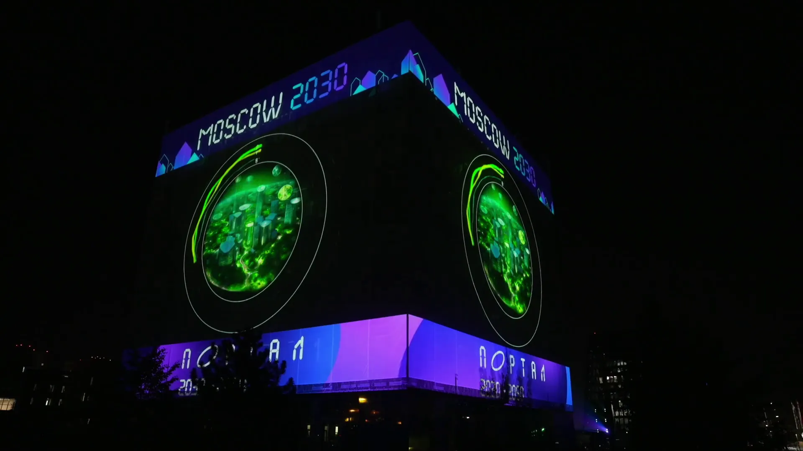
Neurobattle / MindShow
Portable interactive neuroperformance for events.
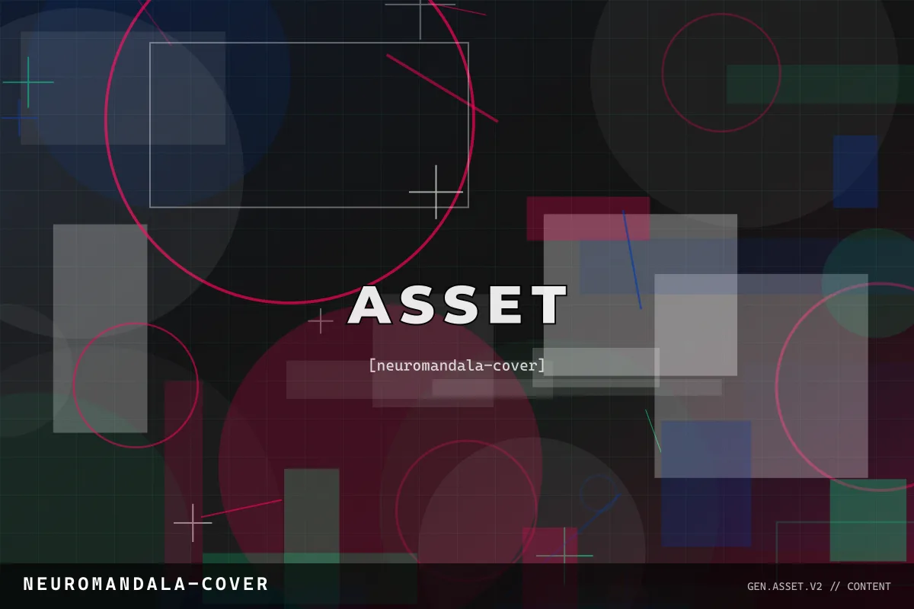
NeuroMandala
Individual / collective neural activity transformed into real-time visual art.
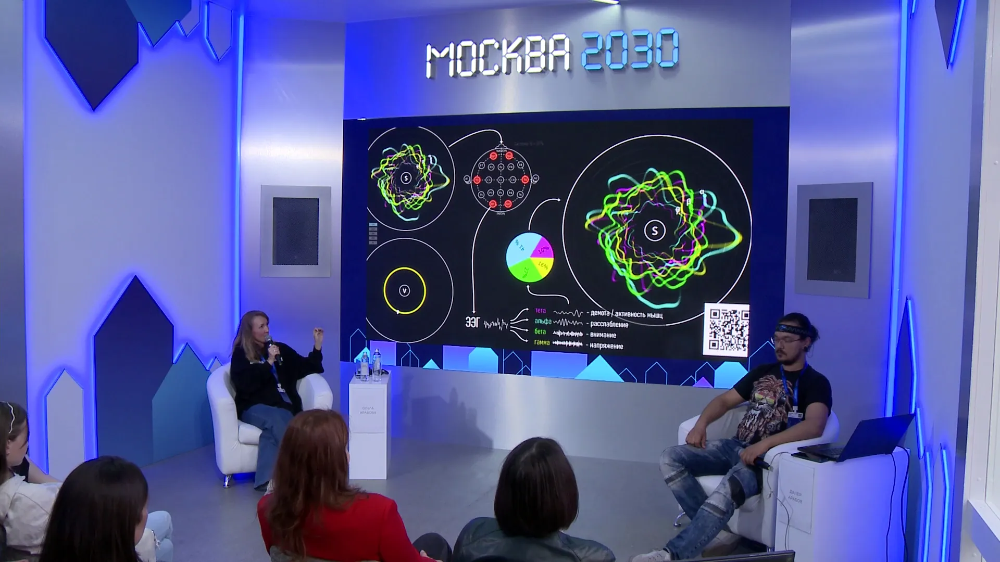
Lecture-performance
Art, neuroscience and audience participation combined into a live educational format.
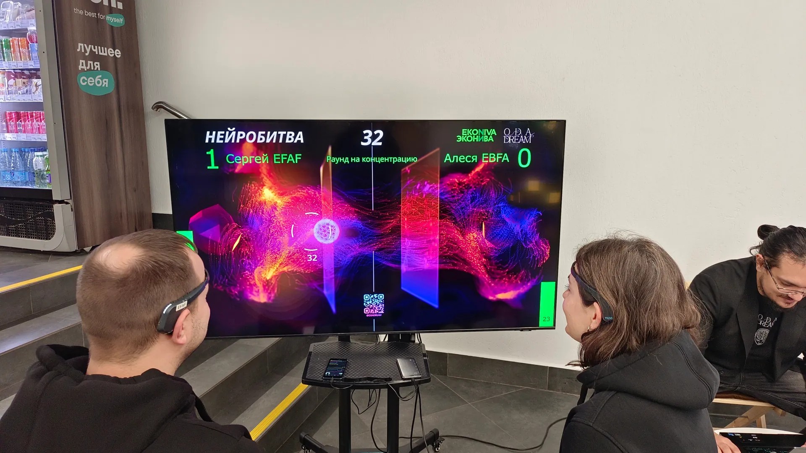
Custom creative-tech R&D
New experiences for museums, festivals, cultural institutions and brands.
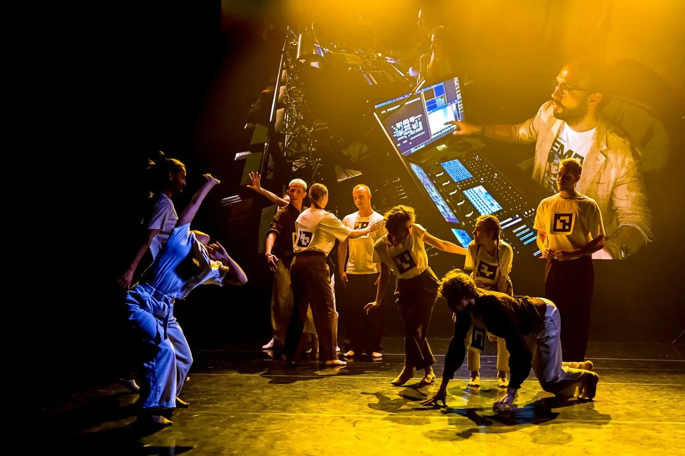
Neurosynchronization
The world accelerates; attention fragments. In this storm we create a field of safety — not against it, within it.
Not individually — but collectively. 5, 10, 100, 1000 people in a feedback loop. When many catch the same wave, empathy opens and people feel connection, participation, alignment.
international co-production partners
cultural institutions interested in commissioning local adaptations
producers and creative-industry organisations with access to international markets
pilot markets for 2027–2028
partners for scalable creative-tech formats in performing arts, museums and major public events
We are especially interested in projects where ODA.dream creates a new work together with local performers, institutions and technology partners.
Daler Arabov
Former head of fablab at Bauman Moscow State Technical University. Member of the Creative Union of Artists of Russia (ТСХР).
Olga Arabova
Artistic practice, project development and the studio behind the international formats.
Let's build the next version together
We are open to international co-production, commissions and strategic partnerships around new forms of live and interactive experience.